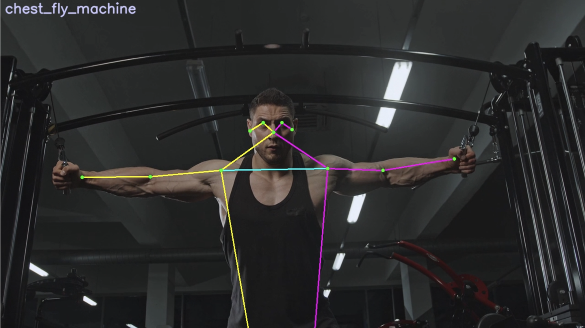

Portfolio
Athletic Chatbot
An AI-powered chatbot that helps athletic trainers streamline athlete data management, injury reports, and training schedules.

Skin Lesion Classifier
A computer vision system designed to identify and classify different types of skin lesions, aiding in early detection of skin conditions.

Computer Vision for Exercise Evaluation
A pose estimation tool that uses computer vision to provide real-time feedback on workout form and technique, assisting trainers and athletes.